Capitolo 7 Variabili Casuali di particolare interesse
Le variabili casuali rappresentano i mattoncini fondamentali con cui si costruiscono i modelli probabilistici e statistici. Alcune variabili casuali, in particolare, emergono come strumenti privilegiati per descrivere classi molto ampie di problemi. La loro importanza deriva dalla semplicità e generalità con cui riescono a rappresentare fenomeni complessi, rendendole elementi centrali in numerose applicazioni.
Queste variabili casuali, che chiamiamo di particolare interesse, sono caratterizzate da una distribuzione nota e convenzionalmente identificata da un nome. Esse non sono semplicemente funzioni generiche, ma rappresentano modelli probabilistici completamente definiti, a eccezione di un numero finito di parametri che devono essere specificati. Questi parametri controllano aspetti fondamentali della distribuzione, come il centro, la dispersione o la forma.
Per rappresentare formalmente questa idea, adottiamo la seguente notazione: se \(X\) è una variabile casuale con distribuzione identificata dalla sigla \(\mathscr{L}\) e parametrizzata da un vettore di parametri \(\theta\), scriviamo:
\[ X \sim \mathscr{L}(\theta) \]
Questa espressione si legge:
\(X\) è distribuita come una variabile casuale di tipo \(\mathscr{L}\) con parametro \(\theta\).
La scelta del simbolo \(\theta\) è intenzionalmente astratta. In questo libro, useremo \(\theta\) esclusivamente per rappresentare un parametro generico o un vettore di parametri. Nessun modello specifico che vedremo avrà mai un parametro chiamato \(\theta\): i parametri dei modelli saranno sempre identificati da simboli più specifici, come \(\mu, \sigma^2, \lambda\), che rifletteranno il significato del parametro nel contesto della distribuzione. Questa scelta è importante per mantenere il rigore formale e per distinguere il livello generale della teoria da quello specifico delle applicazioni.
In ogni caso, l’insieme dei valori possibili per \(\theta\), chiamato spazio dei parametri e indicato con \(\Theta\), definisce il dominio di validità della distribuzione. È l’insieme dei valori per cui la distribuzione ha senso probabilistico.
Questa notazione, benché astratta, è fondamentale per costruire un linguaggio che sia universale, sintetico e adattabile a contesti diversi. Essa ci permette di comunicare non solo che \(X\) segue una certa distribuzione, ma anche di precisare come i parametri controllano il comportamento della distribuzione stessa. Sarà utile sia nel contesto probabilistico, dove i parametri sono spesso fissati a priori, sia in quello statistico, dove i parametri devono essere stimati dai dati osservati.
7.1 La VC di Bernoulli
La VC di Bernoulli codifica ogni bipartizione di \(\Omega\) nei numeri zero e uno. Sia \(A\) un evento qualunque la VC di Bernoulli assegna \(X=1\) se \(A\) è vero e \(X=0\) se \(A\) è falso. Se per esempio estraggo a caso uno studente da un’aula codifico con 1 il fatto che sia maschio e con 0 che sia femmina. La VC \(X\) ha come supporto
\(S_X=\{0,1\}\)
Definiamo con \(\pi\) la probabilità che \(X=1\) e dunque \[\begin{cases} X=1, &\text{con probabilità } \pi\\ X=0, &\text{con probabilità } 1-\pi \end{cases}\]
La precedente può essere scritta in modo più compatto \[ f(x)=P(X=x)=\pi^x(1-\pi)^{1-x}, ~~~x\in\{0,1\} \]
infatti
\[\begin{eqnarray*} f(1) &=& P(X=1) = \pi^1(1-\pi)^{1-1}=\pi \\ f(0) &=& P(X=0) = \pi^0(1-\pi)^{1-0}=1-\pi \end{eqnarray*}\]
Diremo che \(X\) è distribuita come una Bernoulli di parametro \(\pi\) e si scrive \(X\sim\text{Ber}(\pi)\). Lo spazio dei parametri in questo caso è \(\pi\in[0,1]\), cioè \(\pi\) essendo un probabilità non può essere scelto più piccolo di zero o più grande di uno.
Esempio. Un lancio di una moneta perfetta è descritto da una Bernoulli di paramento \(\pi=\frac 1 2\)
Esempio. L’estrazione da un’urna che contiene 1 sfera vincente e 9 perdenti è descritto da una Bernoulli \(\pi=\frac 1 {10}\)
7.1.1 Valore Atteso e Varianza
Se \(X\sim\text{Ber}(\pi)\), allora
\[\begin{eqnarray*} E(X) &=& \sum_{x\in S_X} xf(x)\\ &=& 1\cdot\pi+0\cdot(1-\pi)\\ &=& \pi \end{eqnarray*}\]
\[\begin{eqnarray*} V(X) &=& \sum_{x\in S_X} (x-E(X))^2f(x)\\ &=& (1-\pi)^2\cdot\pi+(0-\pi)^2\cdot(1-\pi)\\ &=& (1-\pi)^2\cdot\pi+\pi^2\cdot(1-\pi)\\ &=& \pi((1-\pi)^2+\pi(1-\pi))\\ &=& \pi(1-\pi)(1-\pi+\pi)\\ &=& \pi(1-\pi) \end{eqnarray*}\]
7.1.2 In Sintesi
Se \(X\) è distribuita come una Bernoulli di parametro \(\pi\), allora \[\begin{align*} \text{Notazione} & & X&\sim\text{\rm Ber}(\pi)\\ \text{Supporto} & & S_X &=\{0,1\}\\ \text{Funzione di probabilità} & & f(x)&=\pi^x(1-\pi)^{1-x}\\ \text{Spazio dei parametri} & & \pi&\in[0,1]\\ \text{Valore Atteso} & & E(X)&=\pi\\ \text{Varianza} & & V(X)&=\pi(1-\pi) \end{align*}\]
7.2 La VC Binomiale
La VC Binomiale consente di calcolare la probabilità di avere un certo numero di successi in un certo numero di prove indipendenti le une dalle altre. Se per esempio lanciamo una moneta perfetta 15 volte potremmo chiederci con quale probabilità otterremmo 8 volte testa su 15 lanci.
7.2.1 La VC Binomiale attraverso un esempio
Si consideri un’urna che contiene 1 bussolotto rosso e 2 bianchi, estraiamo 5 volte con reintroduzione, vogliamo calcolare la probabilità di avere 3 bianchi (e quindi 2 rossi), su 5 estrazioni. \[ E =\text{3 bianchi su 5 estrazioni} \] Chi sono gli eventi che realizzano \(E\)?
\[\begin{eqnarray*} E =\{E_1 &=&(B_1\cap B_2\cap B_3\cap R_4\cap R_5)\cup\\ E_2 &=&(B_1\cap B_2\cap R_3\cap B_4\cap R_5)\cup\\ E_3 &=&(B_1\cap R_2\cap B_3\cap B_4\cap R_5)\cup\\ ...\} \end{eqnarray*}\]
Osserviamo che ogni estrazione dall’urna è descritta da una Bernoulli \(X_1,...,X_{5}\), ovvero che la VC che conta 1 se esce Bianco e 0 se esce Rosso è: \[ X_i\sim\text{Ber}(\pi=2/3),~~~ i=1,...,5 \] Le 5 Bernoulli che rappresentano le 5 estrazioni dall’urna sono tutte tra di loro Indipendenti e Identicamente Distribuite, sono IID.
Osserviamo pure che l’evento \(E\) è vero se e solo se \(X=X_1,...,X_{5}=3\). E dunque la probabilità dell’evento \(E_1\) sarà
\[\begin{eqnarray*} P(E_1)&=&P(X_1=1\cap X_2=1\cap X_3=1\cap X_4 =0\cap X_5=0)\\ &=&P(X_1=1)P(X_2=1)P(X_3=1)P(X_4=0)P(X_5=0),~~~\text{in virtù della indipendenza}\\ &=&\frac2 3\cdot\frac2 3\cdot\frac2 3\cdot \frac 1 3 \cdot \frac 1 3\\ &=&\left(\frac 2 3\right)^3\left(\frac 1 3\right)^2\\ &=& 0.0329 \end{eqnarray*}\]
Notiamo che \(1+1+1+0+0=3\). E dunque la probabilità dell’evento \(E_2\) sarà
\[\begin{eqnarray*} P(E_2)&=&P(X_1=1\cap X_2=1\cap X_3=0\cap X_4 =1\cap X_5=0)\\ &=&P(X_1=1)P(X_2=1)P(X_3=0)P(X_4=1)P(X_5=0),~~~\text{in virtù della indipendenza}\\ &=&\frac2 3\cdot\frac2 3\cdot\frac1 3\cdot \frac 2 3 \cdot \frac 1 3\\ &=&\left(\frac 2 3\right)^3\left(\frac 1 3\right)^2\\ &=& 0.0329 \end{eqnarray*}\]
Anche stavolta notiamo che \(1+1+0+1+0=3\). E dunque la probabilità dell’evento \(E_3\) sarà
\[\begin{eqnarray*} P(E_3)&=&P(X_1=1\cap X_2=0\cap X_3=1\cap X_4 =1\cap X_5=0)\\ &=&P(X_1=1)P(X_2=0)P(X_3=1)P(X_4=1)P(X_5=0),~~~\text{in virtù della indipendenza}\\ &=&\frac2 3\cdot\frac1 3\cdot\frac2 3\cdot \frac 2 3 \cdot \frac 1 3\\ &=&\left(\frac 2 3\right)^3\left(\frac 1 3\right)^2\\ &=& 0.0329 \end{eqnarray*}\]
Tutti gli eventi \(E_i\) hanno la stessa probabilità e dunque \[ P(E_i)=\left(\frac 2 3\right)^3\left(\frac 1 3\right)^2 = 0.0329 \]
E dunque
\[\begin{eqnarray*} P(E)&=&P(E_1\cup E_2\cup E_3\cup...)\\ &=&P(E_1)+P(E_2)+P(E_3)+...,~~~\text{per via della incompatibilità}\\ &=&\left(\frac 2 3\right)^3\left(\frac 1 3\right)^2+\left(\frac 2 3\right)^3\left(\frac 1 3\right)^2+\left(\frac 2 3\right)^3\left(\frac 1 3\right)^2+~...\\ &=& \#\{\text{di modi in cui posso disporre 3B su 5}\}\cdot0.0329 \end{eqnarray*}\]
In quanti modi posso disporre 3 successi nelle 5 prove?
| sequenze | conteggio |
|---|---|
| 1,1,1,0,0 | 1 |
| 1,1,0,1,0 | 2 |
| 1,1,0,0,1 | 3 |
| 1,0,1,1,0 | 4 |
| 1,0,1,0,1 | 5 |
| 1,0,0,1,1 | 6 |
| 0,1,1,1,0 | 7 |
| 0,1,1,0,1 | 8 |
| 0,1,0,1,1 | 9 |
| 0,0,1,1,1 | 10 |
In 10 modi diversi, per cui: \[ P(E)=10\cdot0.0329=0.3292 \] Il Coefficiente Binomiale calcola il numero di possibili combinazioni senza doverle scrivere tutte (in quanti modi posso riempire n scatole numerate con k palline indistinguibili).
Nel nostro caso: \[\binom{5}{ 3}=\frac{5!}{3!(5-3)!}=\frac{5\cdot 4 \cdot 3\cdot 2\cdot 1}{(3\cdot 2\cdot 1)(2\cdot 1)}=10\]
7.2.2 Il modello
Siano \(X_1,...,X_n\) \(n\) VC IID, tutte di Bernoulli \[ X_i\sim\text{Ber}(\pi), ~~\pi\in{[0,1]} \] Sia \[ X=X_1+...+X_n \] allora \(X\) è chiamata VC Binomiale \[X\sim\text{Binom}(n;\pi) \] è la VC che conta il numero di successi in \(n\) prove indipendenti e identicamente distribuite di Bernoulli, ogni prova ha probabilità \(\pi\) di avere successo.
Il supporto di \(X\) è \[S_X=\{0,1,2,...,n\}\]
Lo spazio dei parametri è \[0\leq\pi\leq 1 \rightarrow \pi\in[0,1]\]
La funzione di probabilità di \(X\) è \[f(x)=P(X=x)=\binom{n}{ x}\pi^x(1-\pi)^{n-x} \]
Il valore atteso e la varianza sono, rispettivamente \[E(X)=n\pi\qquad V(X)=n\pi(1-\pi)\]
Esempi (\(n=1\) e \(n=5\))
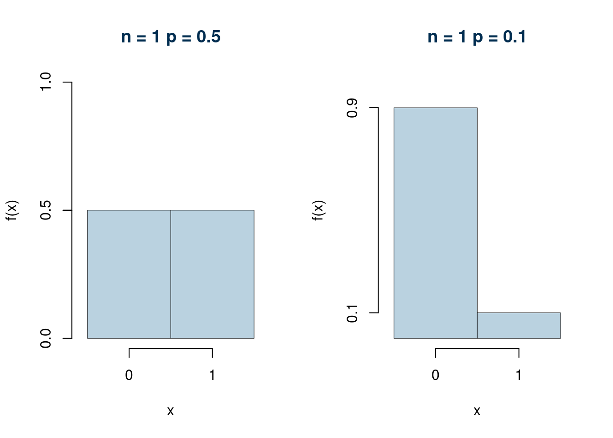
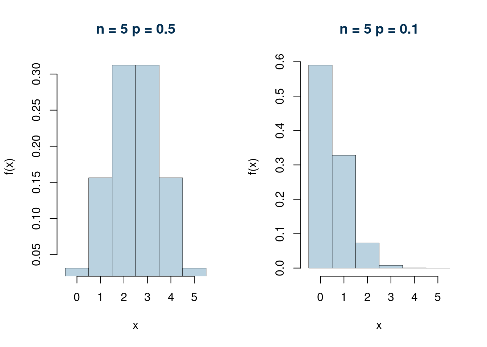
Esempi (\(n=10\) e \(n=50\))
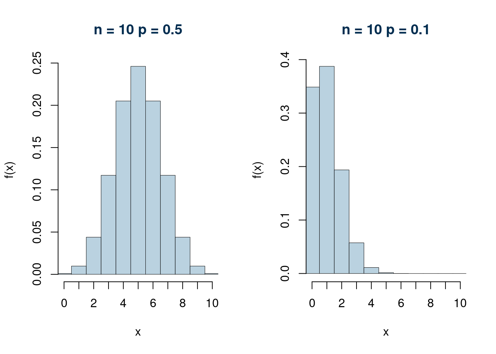
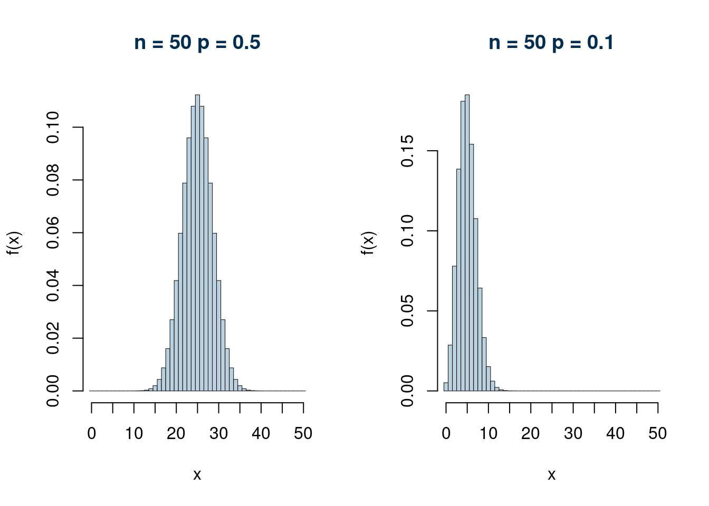
7.2.3 Dimostrazione del Valore atteso e della Varianza
se \(X\sim\text{Binom}(n;\pi)\) allora è la somma di \(n\) prove di Bernoulli IID \(X_i\sim\text{Ber}(\pi)\): \[X=X_1+...+X_n\] e sappiamo che \[E(X_i)=\pi,\qquad V(X_i)=\pi(1-\pi),~\forall i=1,...,n\] quindi
\[\begin{eqnarray*} E(X) &=& E(X_1+...+X_n)\\ &=& E(X_1)+...+E(X_n)\\ &=& \pi +...+\pi\\ &=& n\pi \\ V(X) &=& V(X_1+...+X_n)\\ &=& V(X_1)+...+V(X_n),~~\text{in virtù dell'indipendenza}\\ &=& \pi(1-\pi) +...+\pi(1-\pi)\\ &=& n\pi(1-\pi) \end{eqnarray*}\]
7.2.4 Esempio
Si lancia un dado a sei facce non truccato \(n=5\) volte, si vince se si ottiene un punteggio strettamente maggiore di 4.
- Calcolare la probabilità non vincere nessuna volta in \(n=5\) tentativi.
Soluzione. La variabile casuale che conta il numero di vittorie in \(n=5\) lanci è la Binomiale, la probabilità di vittoria nel singolo lancio si calcola facilmente: \[\pi=P(\text{Dado}> 4)=P( \text{Dado}= 5\cup \text{Dado}= 6)=\frac 1 6 +\frac 1 6 =\frac 1 3\]
La probabilità di non vincere in nessuno degli \(n\) tentativi equivale a calcolare la probabilità che \(X\) sia uguale a zero
\[P(X=0)=\binom{n}{ x}\pi^x(1-\pi)^{n-x}=\binom{5}{3}\frac 1 3^0\left(1-\frac 1 3\right)^{5-0}=1\cdot\left({\frac 2 3}\right)^5=0.0412\]
- Calcolare la probabilità vincere al massimo due volte in \(n=5\) tentativi.
Soluzione. La probabilità di vincere al massimo due volte su \(n\) tentativi equivale a calcolare la probabilità che \(X\) sia minore o uguale due
\[\begin{eqnarray*} P(X\leq 2) &=& P(X=0\cup X=1 \cup X=2)\\ &=& P(X=0)+P(X=1)+P(X=2)\\ &=& \binom{5}{ 0}\left(\frac 1 3\right)^0\left(1-\frac 1 3\right)^{5-0}+ \binom{5}{ 1}\left(\frac 1 3\right)^1\left(1-\frac 1 3\right)^{5-1}+ \binom{5}{ 2}\left(\frac 1 3\right)^2\left(1-\frac 1 3\right)^{5-2}\\ &=& 1\cdot\left({\frac 2 3}\right)^5+5\cdot\left({\frac 1 3}\right)^1\left({\frac 2 3}\right)^4 +10\cdot\left({\frac 1 3}\right)^2\left({\frac 2 3}\right)^3\\ &=& 0.7901 \end{eqnarray*}\]
- Calcolare la probabilità vincere almeno due volte in \(n=5\) tentativi.
Soluzione. La probabilità di vincere almeno due volte su \(n\) tentativi equivale a calcolare la probabilità che \(X\) sia maggiore o uguale due
\[\begin{eqnarray*} P(X\geq 2) &=& P(X=2 \cup X=3 \cup X=4 \cup X=5)\\ &=& 1-P(X<2)\\ &=& 1-(P(X=0)+P(X=1))\\ &=& 1-\left(1\cdot \left(\frac 1 3\right)^0\left(1-\frac 1 3\right)^{5-0} +5\cdot \left(\frac 1 3\right)^1\left(1-\frac 1 3\right)^{5-1} \right)\\ &=& 0.5391 \end{eqnarray*}\]
7.2.5 Proprietà
Proprietà 7.1 (Variabile Casuale Binomiale) Sia \(X\sim\text{\rm Binom}(n;\pi)\), allora:
- \(E(X)\) e \(V(X)\) crescono al crescere di \(n\)
- La distribuzione di \(X\) è perfettamente simmetrica se \(\pi=0.5\)
- La distribuzione di \(X\) è tende a diventare simmetrica se \(n\to\infty\), per ogni valore di \(0<\pi<1\)
- Proprietà riproduttiva: Siano \(X_1,X_2,...,X_m\) \(m\) VC indipendenti, ognuna \(X\sim\text{\rm Binom}(n_i,\pi), i =1,...,m\), allora \[X_1+...+X_m\sim\text{\rm Binom}(n_1+...+n_m;\pi)\]
Si osservi che una Binomiale per \(n=1\) e \(\pi\) equivale ad una Bernoulli di parametro \(\pi\)
\[ X\sim\text{Binom}(1,\pi)\sim\text{Ber}(\pi) \]
e quindi dalla proprietà riproduttiva abbiamo che se \(X_1,X_2,...,X_n\) sono \(n\) VC indipendenti, ognuna \(X\sim\text{Binom}(1,\pi), i =1,...,m\), allora
\[X_1+...+X_m\sim\text{Binom}(n;\pi)\]
Lanciare 5 volte la stessa moneta e contare il numero di teste equivale, dal punto di vista probabilistico, a lanciare 5 monete identiche e contare il numero di teste.
7.2.6 In Sintesi
Se \(X\) è distribuita come una Binomiale di parametro \(\pi\), allora
\[\begin{align*} \text{Notazione} & & X&\sim\text{Binom}(n,\pi) \\ \text{Supporto} & & S_X &=\{0,1,2,...,n\} \\ \text{Funzione di probabilità} & & f(x)&=\binom{n}{x}\pi^x(1-\pi)^{n-x}\\ \text{Spazio dei parametri} & & \pi&\in[0,1], n\in\{0,1,2,3,...\}\\ \text{Valore Atteso} & & E(X)&=n\pi\\ \text{Varianza} & & V(X)&=n\pi(1-\pi)\\ \end{align*}\]
Proprietà riproduttiva: Siano \(X_1,X_2,...,X_m\) \(m\) VC indipendenti, ognuna \(X\sim\text{Binom}(n_i,\pi), i =1,...,m\), allora
\[X_1+...+X_m\sim\text{Binom}(n_1+...+n_m;\pi)\]
7.3 La VC di Poisson
7.3.1 Obiettivo
Trovare una variabile casuale che ci consenta di probabilizzare particolari fenomeni espressi in forma di conteggi:
- Numero di telefonate in arrivo ad un centralino di emergenza in un’ora
- Numero di interventi richiesti in assistenza in 24h
- Numero di automobili in fila ad un semaforo in orario di punta
- Numero di volte che si è cercato lavoro negli ultimi tre mesi
Sono tutti fenomeni che hanno un supporto indefinito, perché il fenomeno potrebbe essere zero, oppure uno, oppure due, oppure… e non è possibile fissare manualmente infiniti valore di probabilità.
7.3.2 Storia
La distribuzione Poisson fu introdotta da Siméon-Denis Poisson nel 1838 nel suo articolo “Recherches sur la probabilité des jugements en matière criminelle et en matière civile”. Tra le tante applicazioni venne utilizzata per studiare la variabile casuale \(X\) numero di morti per calcio di cavallo. Evento raro, ma possibile nel IX secolo. Se il numero \(n\) di calci da cavallo fossero stati pochi, la distribuzione sarebbe binomiale, \(X\sim \text{Binom}(n;\pi)\), dove \(\pi\) è la probabilità di morire avendo preso un calcio. Pur essendo \(\pi\) un numero molto basso, nel 1800 \(n\) invece è un numero molto elevato
7.3.3 Il modello
Poisson assume che il valore atteso di \(X\) sia \(E(X)=n\cdot\pi=\lambda\), dove \(\lambda\) è un numero fissato. Si deduce facilmente che \[\pi=\frac\lambda n\]
La distribuzione di \(X\) diventa allora \[\begin{eqnarray*} P(X=x) &=& \binom{n}{x}\pi^x(1-\pi)^{n-x}\\ &=& \binom{n}{x}\left(\frac\lambda n\right)^x\left(1-\frac\lambda n\right)^{n-x}\\ &=& \frac{n!}{x!(n-x)!}\left(\frac\lambda n\right)^x\left(1-\frac\lambda n\right)^{n-x}\\ &=& \frac{\lambda^x}{x!}\frac{n!}{(n-x)! n^x}\left(1-\frac\lambda n\right)^{n-x} \end{eqnarray*}\]
Infine si calcola il limite per \(n\to\infty\). Anzitutto analizziamo il supporto \[S_X=\{0,1,...,n\}\] Se \(n\to\infty\) il supporto di \(X\) diventa \[S_X=\{0,1,...,+\infty\}=\mathbb{N}\] Osserviamo la funzione di probabilità: \[\lim_{n\to\infty}\frac{\lambda^x}{x!}\frac{n!}{(n-x)! n^x}\left(1-\frac\lambda n\right)^{n-x} =\frac{\lambda^x}{x!}e^{-\lambda}\]
In quanto \[\begin{eqnarray*} \lim_{n\to\infty}\frac{n!}{(n-x)! n^x} &=& 1\\ \lim_{n\to\infty}\left(1-\frac\lambda n\right)^{n-x} &=& e^{-\lambda},\qquad \text{si tratta di un limite notevole} \end{eqnarray*}\]
La variabile di Poisson \(X\sim \text{Pois}(\lambda)\) è quella variabile che ha supporto tutti i numeri naturali \[S_X=\mathbb{N}\]
con funzione di probabilità \[f(x)=P(X=x)=\frac{\lambda^x}{x!}e^{-\lambda}\]
lo spazio dei parametri è \[\lambda>0 \rightarrow \Theta=(0,+\infty)=\mathbb{R}^+\]
Il valore atteso e la varianza sono \[E(X)=\lambda,\qquad V(X)=\lambda\]
Alcuni esempi per \(\lambda\le 2\)
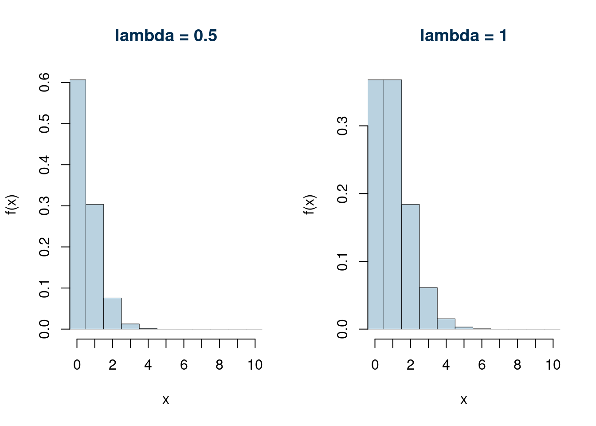
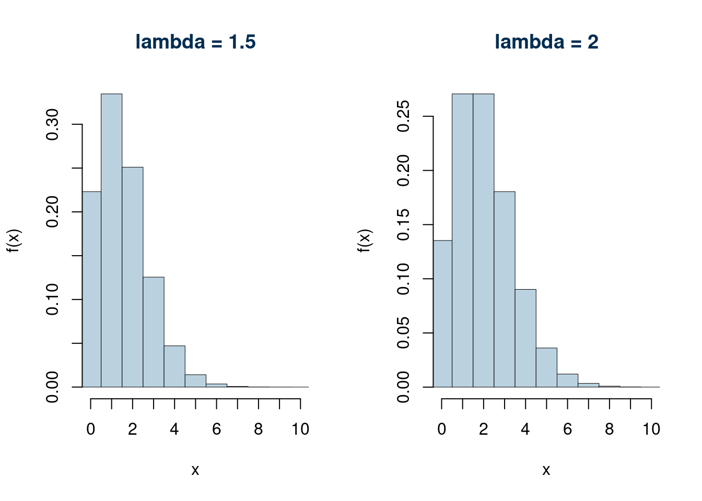
Alcuni esempi per \(\lambda\geq 5\)

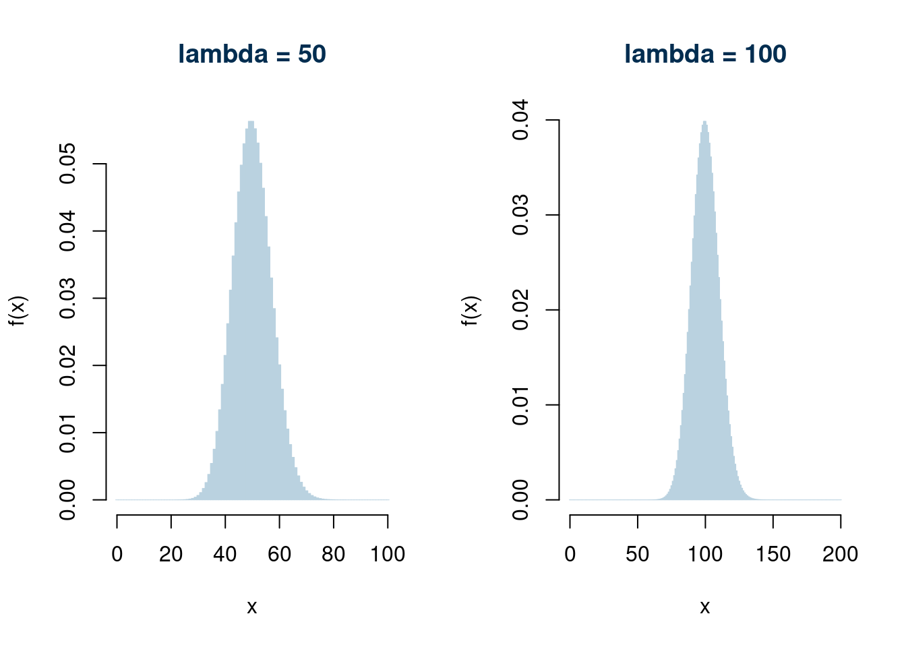
7.3.4 Dimostrazione del Valore atteso e della Varianza della Poisson
Ricordiamo che la Poisson è il limite di una binomiale, il valore atteso della binomiale \(n\pi\), al limite si ottiene \[E(X)=\lim_{n\to\infty} n\pi=\lim_{n\to\infty} n\frac\lambda n=\lambda\] la varianza della binomiale è \(n\pi(1-\pi)\), al limite \[V(X)=\lim_{n\to\infty}n\pi(1-\pi)=\lim_{n\to\infty}n\frac\lambda n\left(1-\frac\lambda n\right)=\lambda\]
7.3.5 Esempio
Sia \(X\) il numero di persone in fila alla cassa 1 di in un supermercato in orario di punta, si assume che \(X\) sia ben modellata da una Poisson di parametro \(\lambda=3.5\), e si scrive \(X\sim\text{Pois}(3.5)\).
- Calcolare la probabilità che nessuno sia in fila
Soluzione. \[P(X=0)=\frac{\lambda^x}{x!}e^{-\lambda}=\frac{3.5^0}{0!}e^{-3.5}=0.0302\]
- Calcolare la probabilità di avere al massimo 2 persone in fila
Soluzione. \[\begin{eqnarray*} P(X\leq 2) &=& P(X=0\cup X=1 \cup X=2)\\ &=& P(X=0)+P(X=1)+P(X=2)\\ &=& \frac{3.5^0}{0!}e^{-3.5}+\frac{3.5^1}{1!}e^{-3.5}+\frac{3.5^2}{2!}e^{-3.5}\\ &=& 0.0302 + 0.1057 + 0.185 = 0.3208 \end{eqnarray*}\]
- Calcolare la probabilità di avere almeno 2 persone in fila
Soluzione. \[\begin{eqnarray*} P(X\geq 2) &=& P(X=2\cup X=3 \cup X=4 \cup ...)\\ &=& 1 - P(X<2)\\ &=& 1-(P(X=0)+P(X=1))\\ &=& 1-(0.0302 + 0.1057) = 0.8641 \end{eqnarray*}\]
- Calcolare la probabilità che il numero di persone in fila sia compreso tra 2 e 4, estremi inclusi
Soluzione. \[\begin{eqnarray*} P(2\leq X\leq 4) &=& P(X=2\cup X=3 \cup X=4 )\\ &=& 0.185 + 0.2158+ 0.1888= 0.1359 \end{eqnarray*}\]
7.3.6 Proprietà della Poisson
Proprietà 7.2 (Variabile Casuale di Poisson) \(\phantom{.}\)
Siano \(X_1, X_2,...,X_n\), \(n\) VC indipendenti, tali che \[X_i\sim\text{Pois}(\lambda_i)\] allora \[X_1+X_2+...+X_n\sim\text{Pois}(\lambda_1+\lambda_2+...+\lambda_n)\]
Sia \(X\sim\text{Binom}(n;\pi)\), se \(n\) cresce (\(n\uparrow\)) e \(\pi\) decresce (\(\pi\downarrow\)) e il loro prodotto rimane fisso in \[n\pi=\lambda>0\] allora \(\lim_{n\to\infty}X\sim \text{Pois}(\lambda)\).
7.3.7 In Sintesi
Se \(X\) è distribuita come una Poisson di parametro \(\lambda\), allora
\[\begin{align*} \text{Notazione} & & X&\sim\mbox{Pois}(\lambda) \\ \text{Supporto} & & S_X &=\{0,1,2,...\}\equiv\mathbb{N} \\ \text{Funzione di probabilità} & & f(x)&=\frac{\lambda^x}{x!}e^{-\lambda}\\ \text{Spazio dei paramteri} & & \lambda&\in[0,+\infty)\equiv\mathbb{R}^+\\ \text{Valore Atteso} & & E(X)&=\lambda\\ \text{Varianza} & & V(X)&=\lambda\\ \end{align*}\]
Proprietà riproduttiva: Siano \(X_1, X_2,...,X_n\), \(n\) VC indipendenti, tali che \[X_i\sim\text{Pois}(\lambda_i)\] allora \[X_1+X_2+...+X_n\sim\text{Pois}(\lambda_1+\lambda_2+...+\lambda_n)\]
7.4 La VC Normale
7.4.1 Obiettivo
L’obiettivo è trovare una variabile casuale che ci consenta di probabilizzare fenomeni simmetrici espressi in forma di misure: Temperatura di un locale, utile netto giornaliero di un negozio, errore commesso nel misurare una distanza, ecc. Sono tutti fenomeni che si esprimono con numeri decimali a volte con una precisione che può essere indefinitamente aumentata (ad esempio il peso, il tempo, la temperatura, ecc.), che possono assumere anche valori negativi
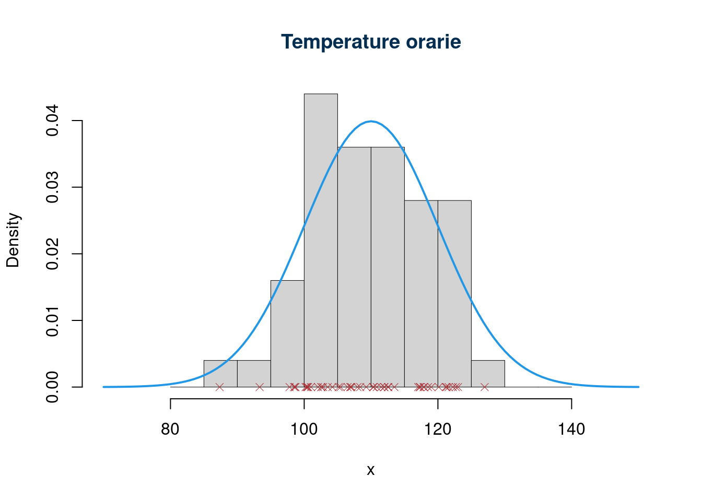
7.4.2 Storia
La distribuzione Normale fu proposta da Gauss (1809) nell’ambito della teoria degli errori, ed è stata attribuita anche a Laplace (1812), che ne definì le proprietà principali in anticipo rispetto alla trattazione più completa fatta da Gauss.
Nata in ambito fisico, la distribuzione è detta distribuzione degli errori accidentali in quanto la distribuzione degli errori commessi nel misurare ripetutamente una stessa grandezza, è molto bene approssimata da questa VC. \[\text{Misura osservata}=\text{Misura vera}+\text{Errore di misura}\] e dunque \[\text{Errore di misura}=\text{Misura osservata}-\text{Misura vera}\]
L’errore di misura è, in tantissimo casi, simmetrico rispetto allo zero: \[P(\text{Errore di misura}>+\epsilon)=P(\text{Errore di misura}<-\epsilon), \forall \epsilon\geq 0\] (la probabilità di sovrastimare la misura di una quantità maggiore \(\epsilon\) è uguale alla probabilità di sottostimarla di una minore quantità \(\epsilon\)) \[\lim_{\epsilon\to\infty}P(|\text{Errore di misura}|> \epsilon)=0\]
7.4.3 Il modello
La VC Normale, \(X\sim N(\mu,\sigma^2)\) è una distribuzione continua con supporto con supporto \[S_X=[-\infty,+\infty]=\mathbb{R}\] Dipende da due parametri \(\mu\) e \(\sigma^2\). Lo spazio dei parametri è \[\Theta=\{(-\infty<\mu<+\infty)\cap(\sigma^2>0)\}=\mathbb{R}\times\mathbb{R}^+\] Con densità di probabilità (non richiesta all’esame) \[f(x)=\frac 1 {\sqrt{2\pi\sigma^2}}e^{-\frac 1 2 \left(\frac{x-\mu}{\sigma}\right)^2}, \qquad \text{Attenzione, in questo caso $\pi=3.1415...$ è la costante trigonometrica}\] Descrizione:
- ha forma campanulare;
- è simmetrica rispetto al parametro \(\mu\);
- ha due punti di flesso in \(\mu\pm\sigma\);
Con valore atteso e varianza: \[E(X)=\mu, \qquad V(X)=\sigma^2\]
Esempi
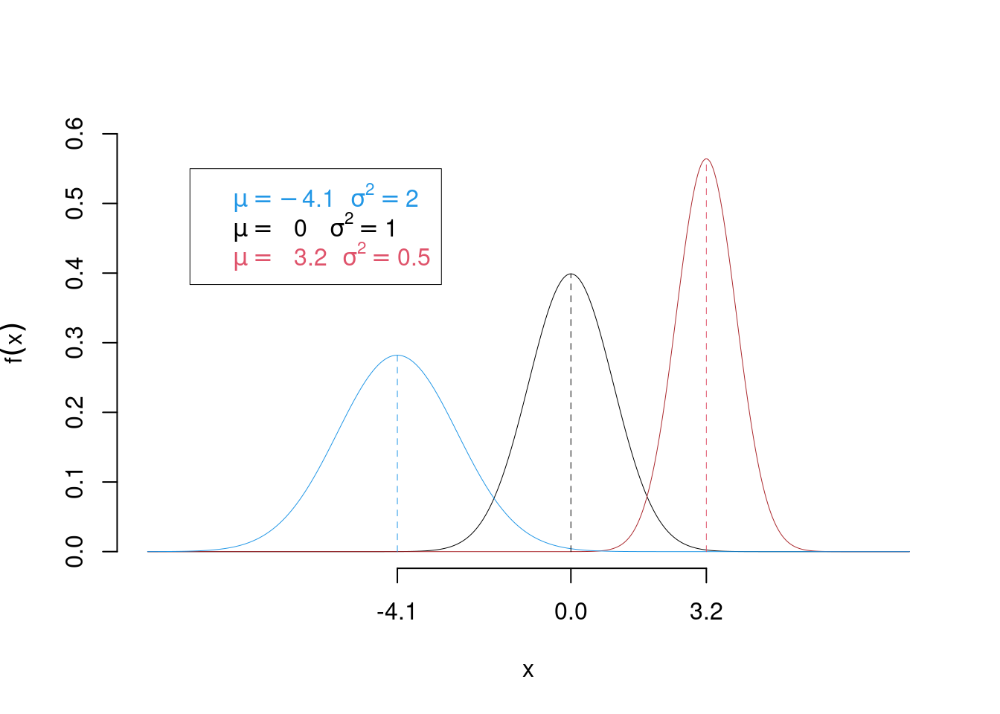
Esempio \(X\sim N(5,2.25)\), posizione dei flessi
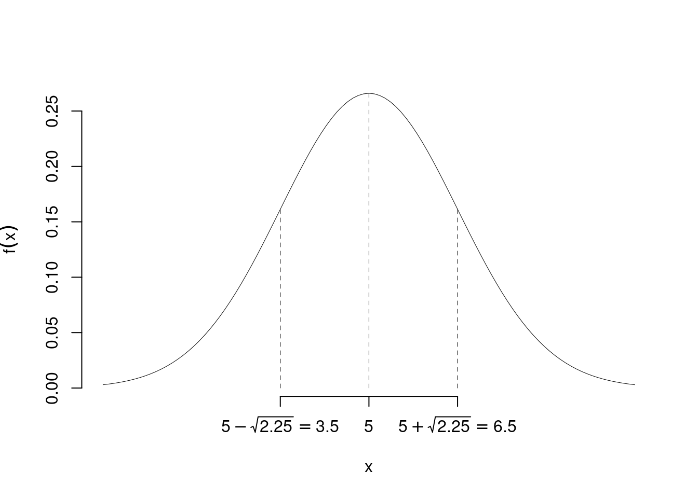
7.4.4 Proprietà della Normale
La normale gode di molte proprietà interessanti, tutte le combinazioni lineari di una normale sono normali e anche la combinazione lineare di normali indipendenti è normale. Più formalmente
Proprietà 7.3 (Proprietà della Normale) Le principali proprietà dell normale sono
- Sia \(X\sim N(\mu,\sigma^2)\), posto \[Y=a+bX,\qquad\text{$a$ e $b$ due numeri reali qualunque}\] allora \[Y\sim N(a+b\mu,b^2\sigma^2)\]
- Siano \(X_1, X_2,...,X_n\), \(n\) VC indipendenti, tali che \[X_i\sim N(\mu_i,\sigma_i^2)\] posto \[Y=a_1X_1+...+a_nX_n\] dove \(a_1,...,a_n\) sono \(n\) numeri reali qualunque, allora \[Y\sim N(a_1\mu_1+...+a_n\mu_n,a_1^2\sigma_1^2+...a_n^2\sigma_n^2)\]
Il punto 1. ci dice che ogni normale è legata ad un’altra, infatti se \(X\sim N(\mu_X,\sigma_X^2)\) e \(Y\sim N(\mu_Y,\sigma_Y^2)\), allora \[ \mu_Y+\frac{\sigma_Y}{\sigma_X}\cdot (X-\mu_X)\sim N(\mu_Y,\sigma_Y^2) \]
Il punto 2. ci dice che la combinazione lineare di normali indipendenti è normale, con media e varianza che si combinano secondo le regole di media e varianza.
Casi speciali per \(n=2\)
Se \(X_1\sim N(\mu_1,\sigma^2_1)\) e \(X_2\sim N(\mu_2,\sigma^2_2)\) allora: \[X_1+X_2\sim N(\mu_1+\mu_2,\sigma^2_1+\sigma^2_2)\]
Attenzione \[X_1-X_2\sim N(\mu_1-\mu_2,\sigma^2_1\color{red}+\color{black}\sigma^2_2)\]
Esempio 7.1 Sia \(X_1\sim N(2.1,3.4)\) e \(X_2\sim N(5.2,2.7)\), allora \[\begin{eqnarray*} X_1 + X_2 &\sim& N(2.1+5.2=7.3,\quad 3.4+2.7=6.1)\\ X_1 - X_2 &\sim& N(2.1-5.2=-3.1,\quad 3.4+2.7=6.1) \end{eqnarray*}\]
Spiegazione
Dalla proprietà 2. osserviamo che, se \(X_1\sim N(\mu_1,\sigma_1^2)\) e \(X_2\sim N(\mu_2,\sigma_2^2)\) posto \[Y=X_1-X_2\] allora \[Y = (+1)X_1+(-1)X_2\]
\(a_1= +1\), \(a_2= -1\) e dunque \[\begin{eqnarray*} Y &\sim& N((+1)\mu_1+(-1)\mu_2,(+1)^2\sigma_1^2+(-1)^2\sigma_2^2)\\ &\sim& N(\mu_1-\mu_2,\sigma_1^2+\sigma_2^2) \end{eqnarray*}\]
Nella differenza di due normali le medie si sottraggono le varianze si sommano.
7.4.5 La normale standard
Si definisce la Normale Standard la normale con parametri \(\mu=0\) e \(\sigma^2=1\). Viene indicata con la lettera \(Z\), \(Z\sim N(0,1)\).
Dalla proprietà 1. si osserva che se \(X\sim N(\mu,\sigma^2)\), posto \[Z=\frac {X-\mu}\sigma= -\frac\mu\sigma+\frac 1 \sigma X\] allora \[E(Z) = -\frac\mu\sigma+\frac 1 \sigma E(X)= -\frac\mu\sigma+\frac \mu \sigma =0\] e \[V(Z)=\left(\frac 1 \sigma \right)^2V(X)=\frac {\sigma^2 }{\sigma^2}=1\]
Sia \(Z\sim N(0,1)\), siano \(\mu\) e \(\sigma^2>0\) due numeri qualunque, posto \[X=\mu+\sigma Z\] allora \[X\sim N(\mu,\sigma^2)\]
Quindi tutte le normali sono legate tra di loro, in particolare sono tutte legate alla Normale Standard.
La normale standard ha densità di probabilità chiama \(\phi\) (da non richiesta all’esame) \[ \phi(z)=\frac 1 {\sqrt{2\pi}}e^{-\frac 1 2 z^2} \]
È una funzione simmetrica intorno a zero e dunque: \[\phi(-z)=\phi(z)\]
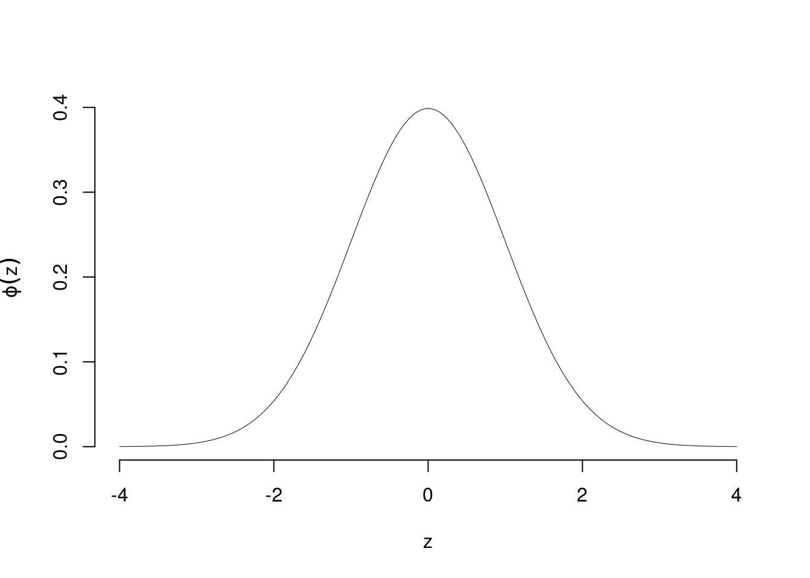
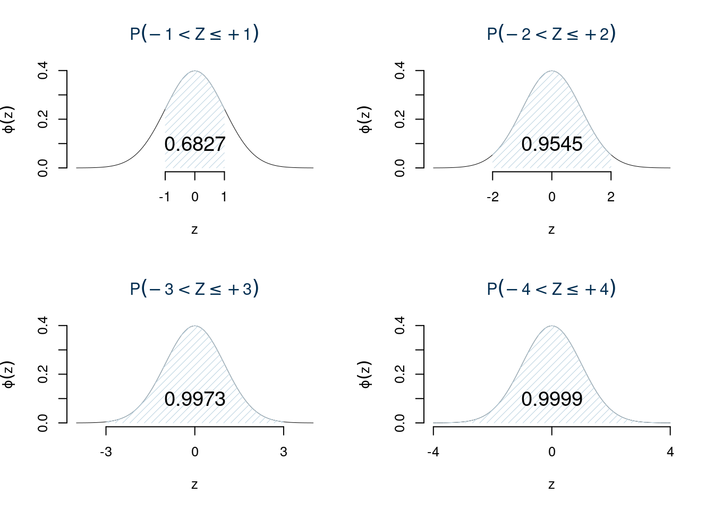
7.4.6 La Funzione di Ripartizione della Normale Standard
Si definisce \(\Phi\) la funzione di ripartizione della normale standard, \(Z\sim N(0,1)\) \[\Phi(z)=P(Z\leq z)=\int_{-\infty}^z\phi(t)dt\]
Rappresenta la probabilità che la variabile \(Z\) assuma un valore minore o uguale a \(z\)
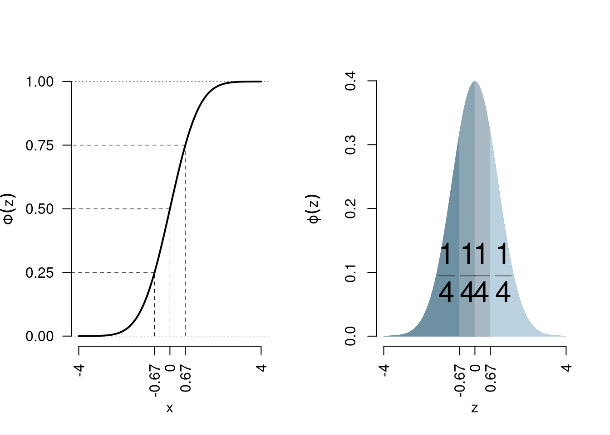
Osserviamo che
\[\begin{eqnarray*} \Phi(0) &=& \frac 1 2 \\ \Phi(z) &=& 1- \Phi(-z) \end{eqnarray*}\]

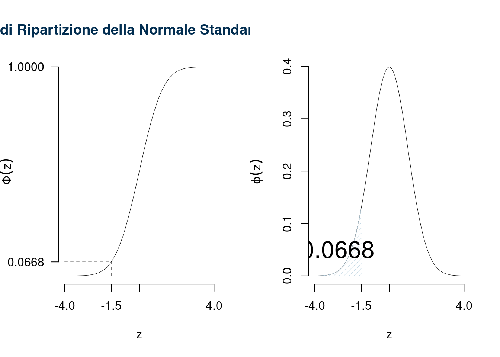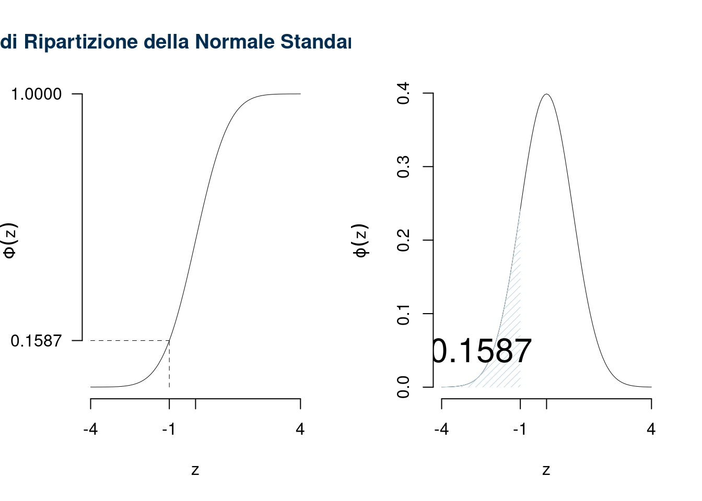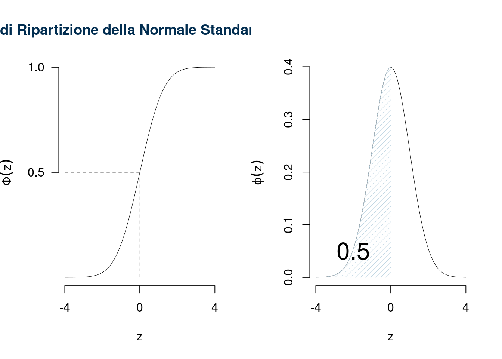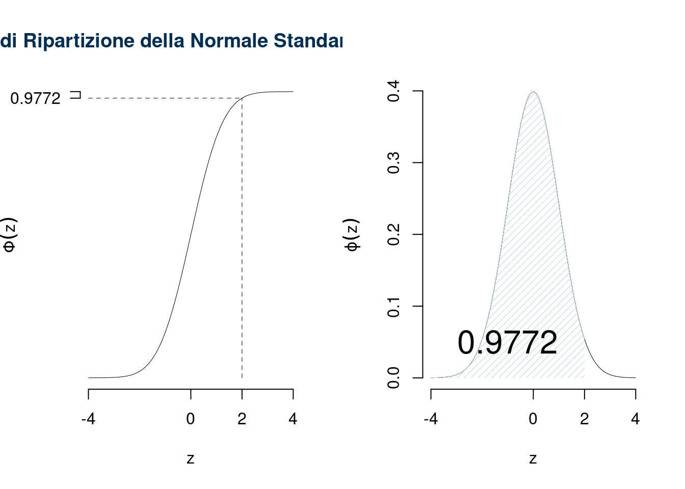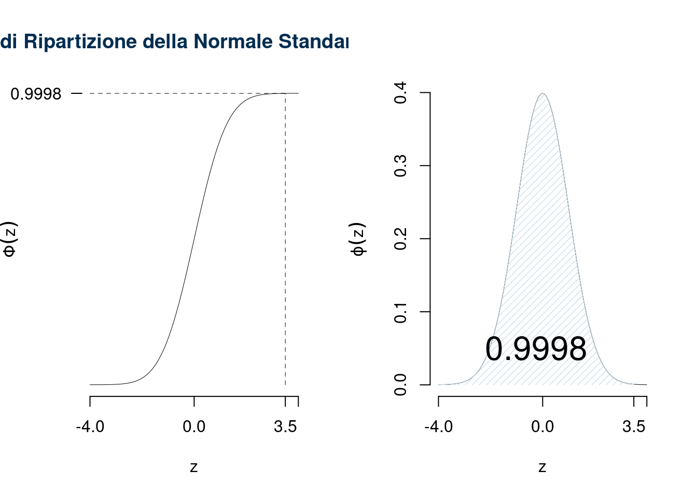
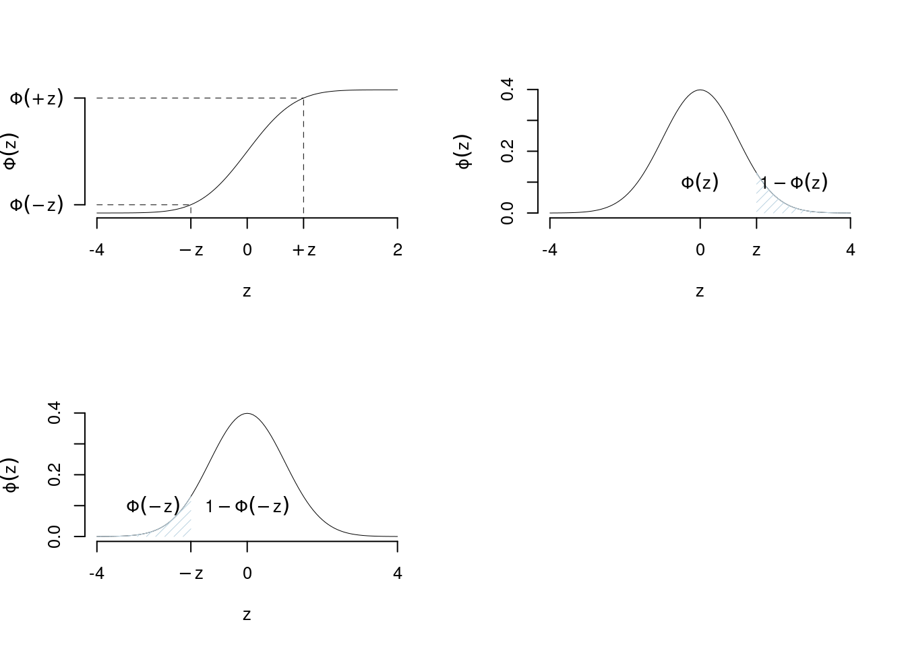
Esempio \(z=-1.5\), \(\Phi(-1.5)=1-\Phi(+1.5)=0.0668\)
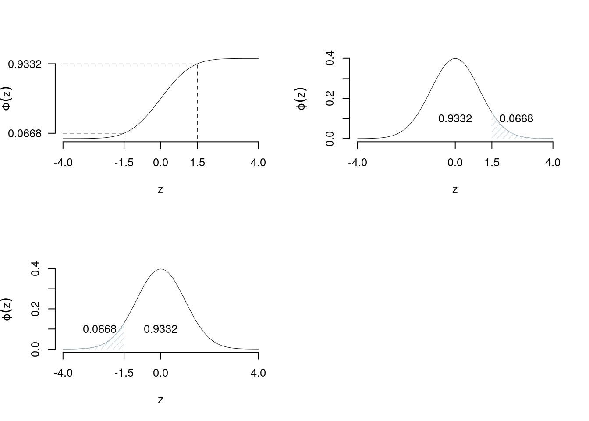
Esempio \(z=+1.5\), \(\Phi(+1.5)=1-\Phi(-1.5)=0.9332\)
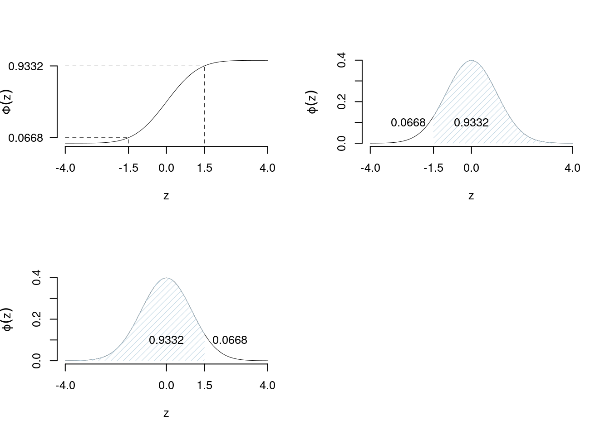
7.4.7 La tavole Statistiche della \(Z\)
La VC normale standard \(Z\sim N(0,1)\) è tabulata nelle tavole statistiche. La tabulazione calcola \(\Phi(z)\) per \(z=0.00, 0.01,0.02,...,4.08,4.09\) I valori negativi non sono tabulati ma si ricavano dalle proprietà di simmetria della normale. Le tavole si presentano come una matrice dimensione \(40\times 10\) Le righe rappresentano gli interi e i decimi di \(z\), le colonne i centesimi
Esempi: \[\Phi(0)=\frac 1 2 = 0.5\]
| 0.00 | 0.01 | 0.02 | 0.03 | 0.04 | 0.05 | 0.06 | 0.07 | 0.08 | 0.09 | |
|---|---|---|---|---|---|---|---|---|---|---|
| 0.0 | 0.5000 | 0.5040 | 0.5080 | 0.5120 | 0.5160 | 0.5199 | 0.5239 | 0.5279 | 0.5319 | 0.5359 |
| 0.1 | 0.5398 | 0.5438 | 0.5478 | 0.5517 | 0.5557 | 0.5596 | 0.5636 | 0.5675 | 0.5714 | 0.5753 |
| 0.2 | 0.5793 | 0.5832 | 0.5871 | 0.5910 | 0.5948 | 0.5987 | 0.6026 | 0.6064 | 0.6103 | 0.6141 |
| 0.3 | 0.6179 | 0.6217 | 0.6255 | 0.6293 | 0.6331 | 0.6368 | 0.6406 | 0.6443 | 0.6480 | 0.6517 |
| 0.4 | 0.6554 | 0.6591 | 0.6628 | 0.6664 | 0.6700 | 0.6736 | 0.6772 | 0.6808 | 0.6844 | 0.6879 |
| continua | … | … | … | … | … | … | … | … | … | … |
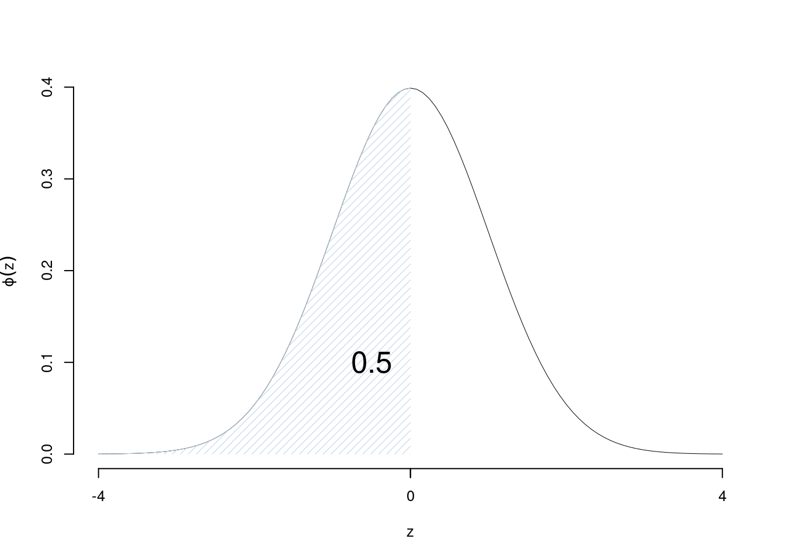
Esempi \(\Phi(0.63)=0.7357\)
| 0.00 | 0.01 | 0.02 | 0.03 | 0.04 | 0.05 | 0.06 | 0.07 | 0.08 | 0.09 | |
|---|---|---|---|---|---|---|---|---|---|---|
| 0.0 | 0.5000 | 0.5040 | 0.5080 | 0.5120 | 0.5160 | 0.5199 | 0.5239 | 0.5279 | 0.5319 | 0.5359 |
| 0.1 | 0.5398 | 0.5438 | 0.5478 | 0.5517 | 0.5557 | 0.5596 | 0.5636 | 0.5675 | 0.5714 | 0.5753 |
| 0.2 | 0.5793 | 0.5832 | 0.5871 | 0.5910 | 0.5948 | 0.5987 | 0.6026 | 0.6064 | 0.6103 | 0.6141 |
| 0.3 | 0.6179 | 0.6217 | 0.6255 | 0.6293 | 0.6331 | 0.6368 | 0.6406 | 0.6443 | 0.6480 | 0.6517 |
| 0.4 | 0.6554 | 0.6591 | 0.6628 | 0.6664 | 0.6700 | 0.6736 | 0.6772 | 0.6808 | 0.6844 | 0.6879 |
| 0.5 | 0.6915 | 0.6950 | 0.6985 | 0.7019 | 0.7054 | 0.7088 | 0.7123 | 0.7157 | 0.7190 | 0.7224 |
| 0.6 | 0.7257 | 0.7291 | 0.7324 | 0.7357 | 0.7389 | 0.7422 | 0.7454 | 0.7486 | 0.7517 | 0.7549 |
| 0.7 | 0.7580 | 0.7611 | 0.7642 | 0.7673 | 0.7704 | 0.7734 | 0.7764 | 0.7794 | 0.7823 | 0.7852 |
| continua | … | … | … | … | … | … | … | … | … | … |
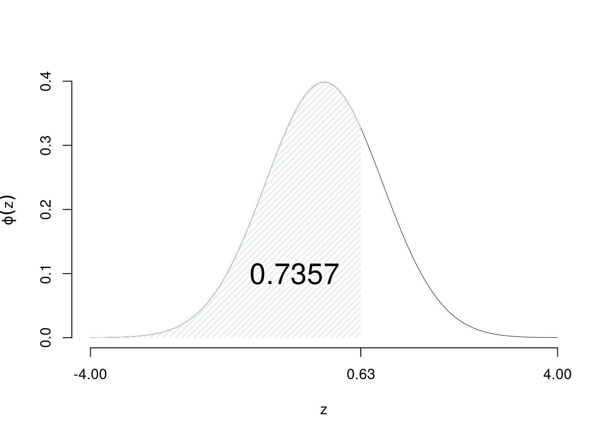
Esempi \(\Phi(2.47)=0.9932\)
| 0.00 | 0.01 | 0.02 | 0.03 | 0.04 | 0.05 | 0.06 | 0.07 | 0.08 | 0.09 | |
|---|---|---|---|---|---|---|---|---|---|---|
| continua | … | … | … | … | … | … | … | … | … | … |
| 2.1 | 0.9821 | 0.9826 | 0.9830 | 0.9834 | 0.9838 | 0.9842 | 0.9846 | 0.9850 | 0.9854 | 0.9857 |
| 2.2 | 0.9861 | 0.9864 | 0.9868 | 0.9871 | 0.9875 | 0.9878 | 0.9881 | 0.9884 | 0.9887 | 0.9890 |
| 2.3 | 0.9893 | 0.9896 | 0.9898 | 0.9901 | 0.9904 | 0.9906 | 0.9909 | 0.9911 | 0.9913 | 0.9916 |
| 2.4 | 0.9918 | 0.9920 | 0.9922 | 0.9925 | 0.9927 | 0.9929 | 0.9931 | 0.9932 | 0.9934 | 0.9936 |
| 2.5 | 0.9938 | 0.9940 | 0.9941 | 0.9943 | 0.9945 | 0.9946 | 0.9948 | 0.9949 | 0.9951 | 0.9952 |
| 2.6 | 0.9953 | 0.9955 | 0.9956 | 0.9957 | 0.9959 | 0.9960 | 0.9961 | 0.9962 | 0.9963 | 0.9964 |
| 2.7 | 0.9965 | 0.9966 | 0.9967 | 0.9968 | 0.9969 | 0.9970 | 0.9971 | 0.9972 | 0.9973 | 0.9974 |
| continua | … | … | … | … | … | … | … | … | … | … |
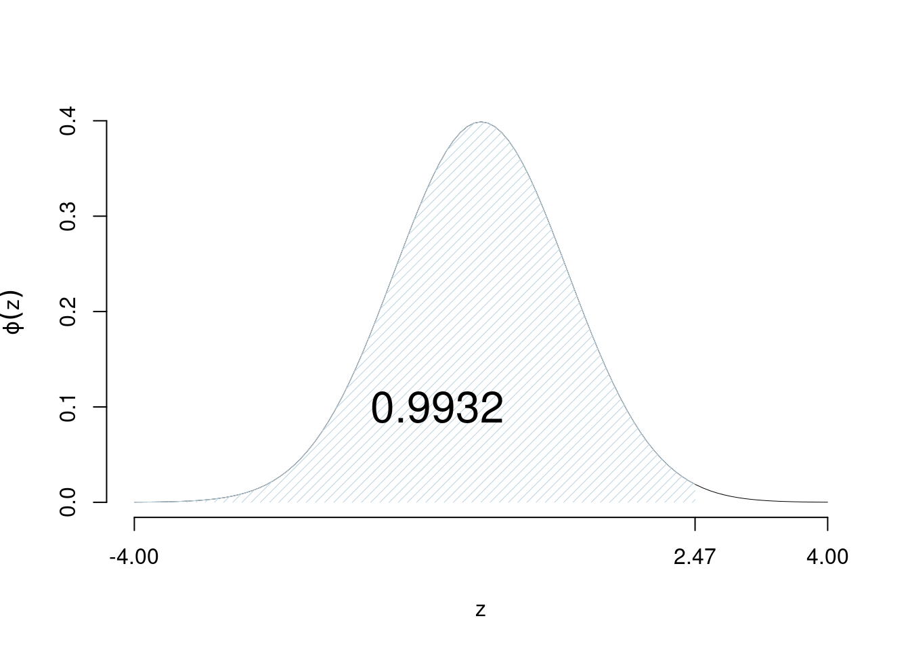
7.4.7.1 Uso delle tavole se \(z<0\)
Siccome \[\Phi(-z)=1-\Phi(z)\]
allora \[\Phi(z)=\begin{cases} \text{se }z\geq 0, \qquad \Phi(z),\text{ da leggere direttamente dalle tavole}\\ \text{se } z < 0, \qquad 1-\Phi(+|z|) \end{cases}\]
Esempio 7.2 Calcolare \(P(Z\leq 1.12)\): \(1.12\geq 0\) e quindi dalle tavole \[P(Z\leq 1.12)=\Phi(1.12)=0.8686\]
Esempio 7.3 Calcolare \(P(Z\leq -1.12)\): \(-1.12< 0\) e quindi \[P(Z\leq -1.12)=\Phi(-1.12)=1-\Phi(+1.12)=0.1314\]
7.4.7.2 Calcolo di \(P(Z>z)\)
Ricordiamo che per definizione
\[\Phi(z)=P(Z\leq z)\]
Siccome il complementare di \(\{Z\leq z\}\) è \(\{Z> z\}\), dalle proprietà della probabilità abbiamo
\[P(Z>z)=1-P(Z\leq z)=1-\Phi(z)\]
Esempio 7.4 calcolare la probabilità che \(Z\) si maggiore di 1.5
\[P(Z > 1.5) = 1-\Phi(1.5)=1-0.9332=0.0668\]
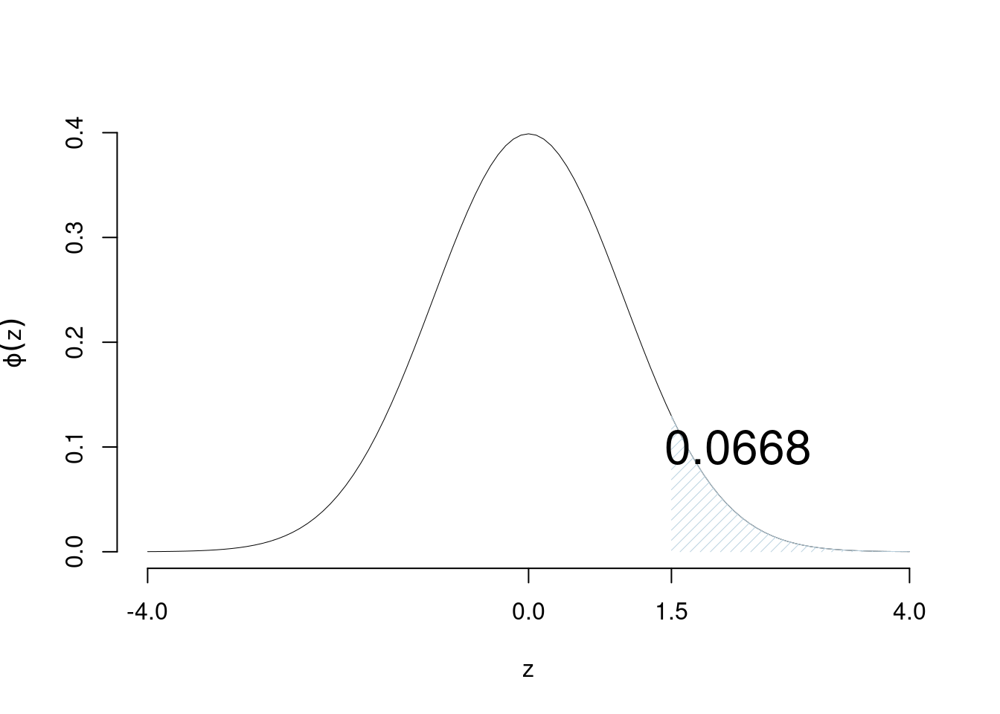
Esempio 7.5 Calcolare la probabilità che \(Z\) si maggiore di -1.5
\[P(Z > -1.5) = 1-\Phi(-1.5)=1-(1-\Phi(+1.5))=\Phi(+1.5)=0.9332\]
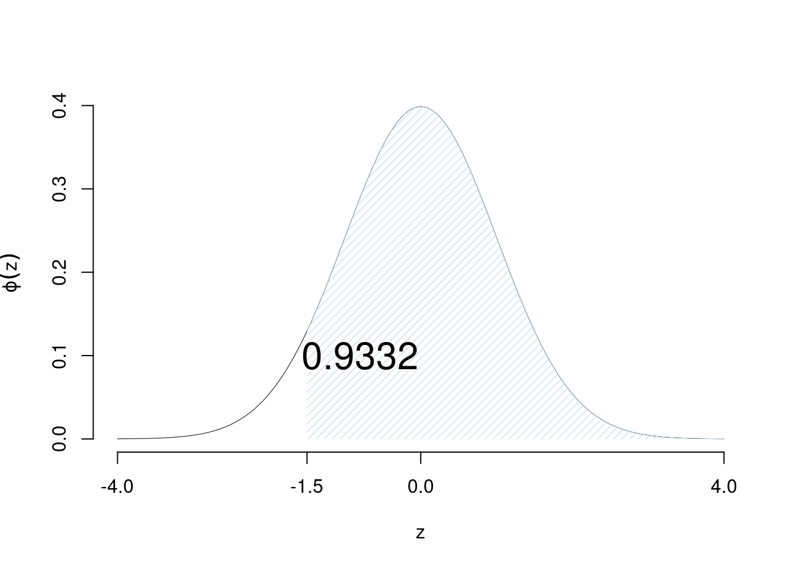
7.4.7.3 Calcolo della probabilità di intervalli
Obiettivo: calcolare la probabilità che \(Z\) si avveri nell’intervallo \((z_1,z_2]\). Dalle proprietà della funzione di ripartizione abbiamo \[P(z_1<Z\leq z_2) = \Phi(z_2)-\Phi(z_1)\]
Esempio 7.6 Calcolare la probabilità che \(Z\) si avveri tra 0.25 e 2.1 \[P(0.25< Z \leq 2.1) = \Phi(2.1)-\Phi(0.25)=0.9821-0.5987=0.3834\]
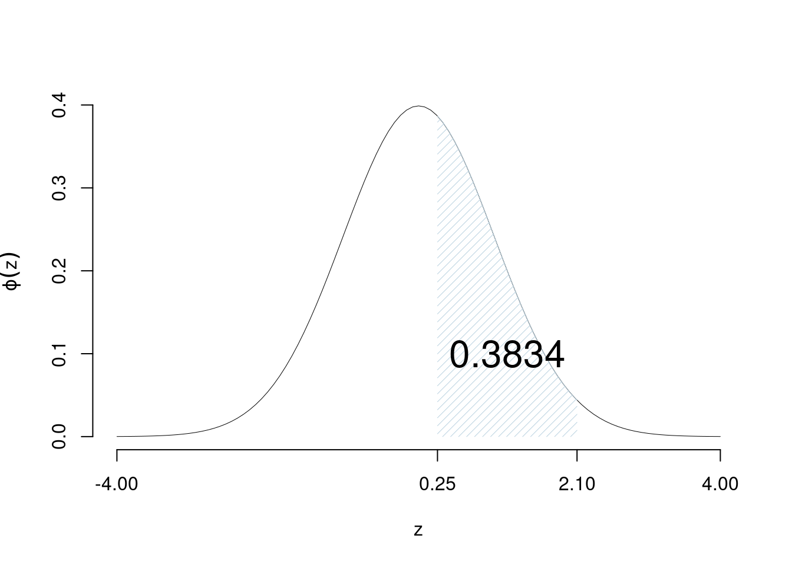
Esempio 7.7 Calcolare la probabilità che \(Z\) si avveri tra -1.22 e 0.78 \[\begin{eqnarray*} P(-1.22< Z \leq 0.78) &=& \Phi(0.78)-\Phi(-1.22) \\ &=& \Phi(0.78)-(1-\Phi(+1.22)) \\ &=& 0.7823-(1-0.8888)\\ &=& 0.6711 \end{eqnarray*}\]
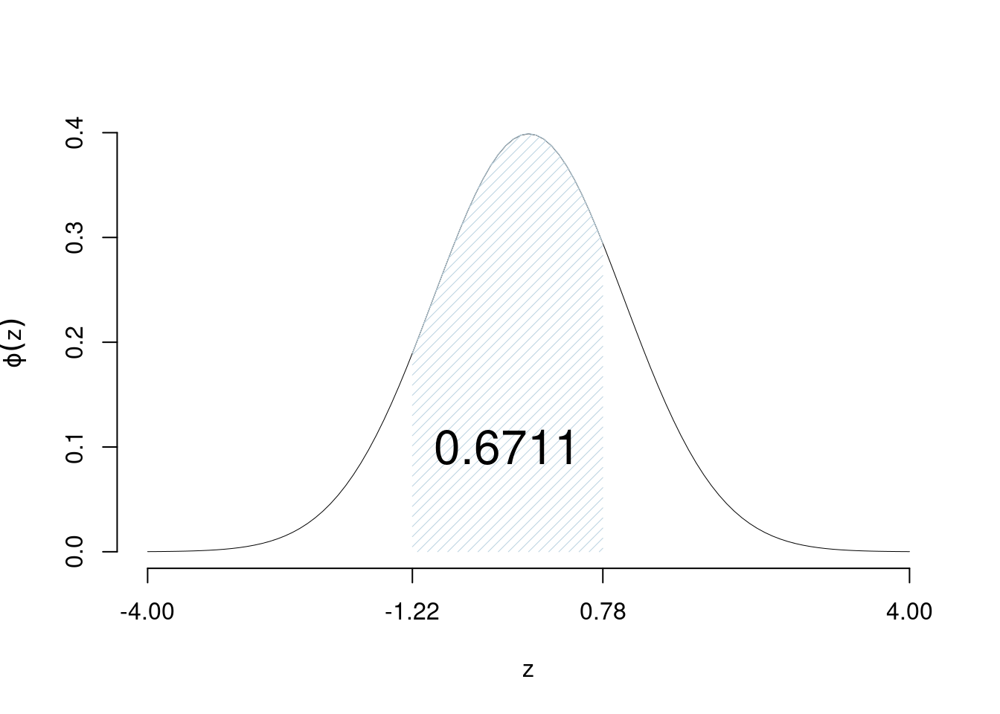
Esempio 7.8 Calcolare la probabilità che \(Z\) si avveri tra -2.8 e -0.12 \[\begin{eqnarray*} P(-2.8< Z \leq -0.12) &=& \Phi(-0.12)-\Phi(-2.8) \\ &=& (1-\Phi(+0.12))-(1-\Phi(+2.8)) \\ &=& \Phi(+2.8)-\Phi(+0.12)\\ &=& 0.4497 \end{eqnarray*}\]
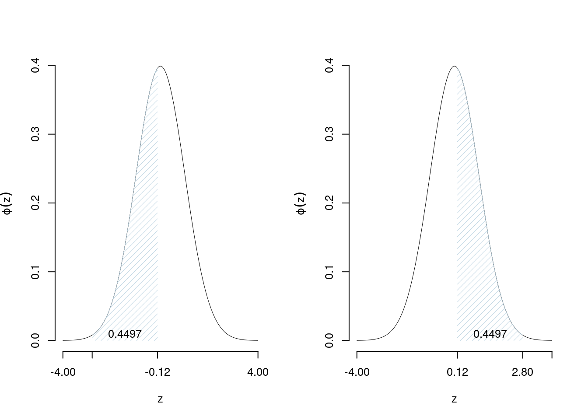
7.4.7.4 Calcolo su una normale qualunque \(X\sim N(\mu,\sigma^2)\)
Sia data \(X\sim N(\mu,\sigma^2)\), obiettivo calcolare \[P(x_1<X\leq x_2)\] dove \(x_1\) e \(x_2\) sono due numeri reali qualunque.
Ricordiamo che \[Z=\frac {X-\mu}\sigma,\qquad Z\sim N(0,1)\]
E dunque \[\begin{eqnarray*} P(x_1<X\leq x_2) &=& P\left( \frac {x_1 - \mu}\sigma < \frac {X - \mu}\sigma \leq \frac {x_2 - \mu}\sigma\right) \\ &=& P(z_1<Z\leq z_2) \end{eqnarray*}\] dove \(z_1=\frac {x_1 - \mu}\sigma\) e \(z_2=\frac {x_2 - \mu}\sigma\)
Esempio 7.9 Sia \(X\sim N(10,4)\), calcolare la probabilità che \(7<X\leq 11\) \[\begin{eqnarray*} P(7<X\leq 11) &=& P\left( \frac {7 - 10}{\sqrt{4}} < \frac {X - \mu}\sigma \leq \frac {11 - 10}{\sqrt{4}}\right) \\ &=& P\left( -1.5 < Z \leq 0.5\right) \\ &=& \Phi(0.5)-\Phi(-1.5)\\ &=& \Phi(0.5)-(1-\Phi(1.5))\\ &=& 0.6915-(1-0.9332)\\ &=& 0.6247 \end{eqnarray*}\]
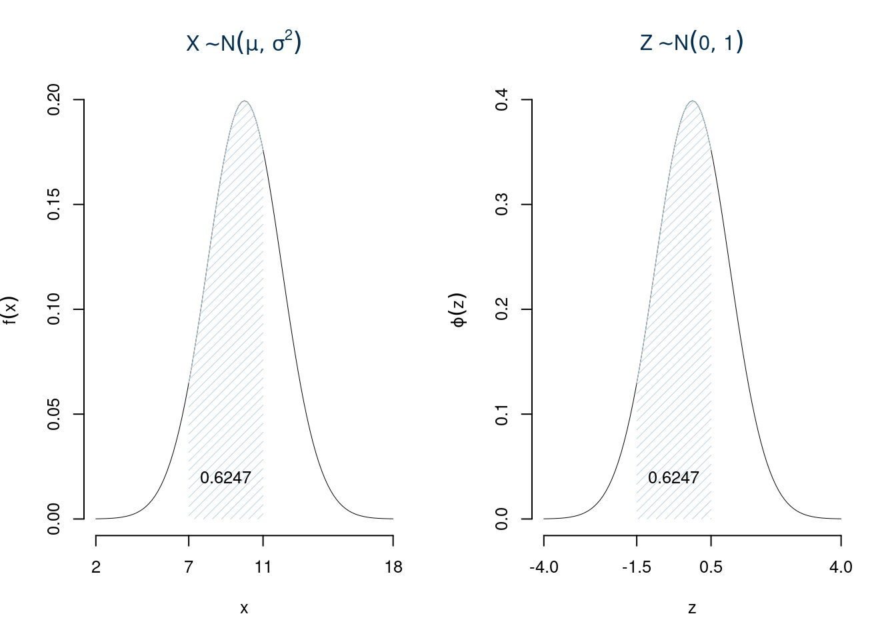
Questa applicazione esemplifica l’uso delle tavole e risolve ogni tipo intervallo: Normale
Osservazione
Abbiamo detto che per definizione la Funzione di Ripartizione di una VC \(X\) è: \[F(x)=P(X\leq x)\]
Nelle funzioni di ripartizione di VC continue, e quindi anche per la normale, accade che \[P(X\leq x)\geq 0\]
ma \[P(X=x)=0\]
e quindi, se \(X\) è VC continua \[P(X\leq x)=P(X<x)\]
e analogamente \[P(X\geq x)=P(X>x)\]
Se \(X\) è VC continua \[P(x_1<X\leq x_2)=P(x_1\leq X \leq x_2)=P(x_1\leq X < x_2)=P(x_1<X<x_2)\]
7.4.7.5 Il problema inverso
Obbiettivo: data \(Z\sim N(0,1)\), sia \(0<\alpha<1\) un numero fissato, si cerca qual valore \(z_\alpha\) tale che: \[P(Z > z_\alpha)=\alpha\]
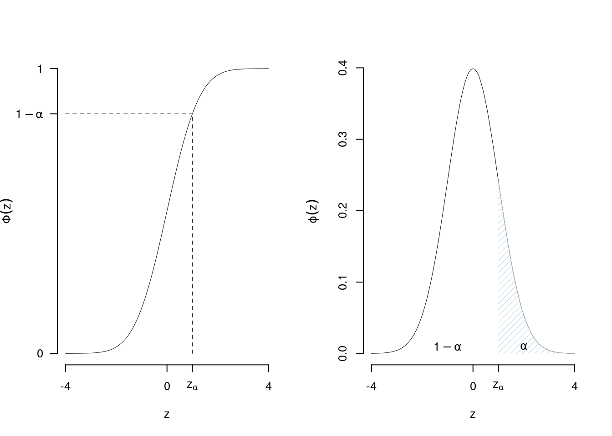
Esempio 7.10 Per \(\alpha\) qualunque. Sia \(\alpha=0.15\) cerchiamo quel valore \(z_{0.15}\) tale che \[P(Z>z_{0.15})=0.15\]
Dalla regola del complemento otteniamo \[P(Z\leq z_{0.15})=1-0.15=0.85\]
Cerchiamo nelle tavole della normale quale valore di \(z\) si avvicina di più a 0.85
| 0.00 | 0.01 | 0.02 | 0.03 | 0.04 | 0.05 | 0.06 | 0.07 | 0.08 | 0.09 | |
|---|---|---|---|---|---|---|---|---|---|---|
| continua | … | … | … | … | … | … | … | … | … | … |
| 0.7 | 0.7580 | 0.7611 | 0.7642 | 0.7673 | 0.7704 | 0.7734 | 0.7764 | 0.7794 | 0.7823 | 0.7852 |
| 0.8 | 0.7881 | 0.7910 | 0.7939 | 0.7967 | 0.7995 | 0.8023 | 0.8051 | 0.8078 | 0.8106 | 0.8133 |
| 0.9 | 0.8159 | 0.8186 | 0.8212 | 0.8238 | 0.8264 | 0.8289 | 0.8315 | 0.8340 | 0.8365 | 0.8389 |
| 1.0 | 0.8413 | 0.8438 | 0.8461 | 0.8485 | 0.8508 | 0.8531 | 0.8554 | 0.8577 | 0.8599 | 0.8621 |
| 1.1 | 0.8643 | 0.8665 | 0.8686 | 0.8708 | 0.8729 | 0.8749 | 0.8770 | 0.8790 | 0.8810 | 0.8830 |
| 1.2 | 0.8849 | 0.8869 | 0.8888 | 0.8907 | 0.8925 | 0.8944 | 0.8962 | 0.8980 | 0.8997 | 0.9015 |
| 1.3 | 0.9032 | 0.9049 | 0.9066 | 0.9082 | 0.9099 | 0.9115 | 0.9131 | 0.9147 | 0.9162 | 0.9177 |
| 1.4 | 0.9192 | 0.9207 | 0.9222 | 0.9236 | 0.9251 | 0.9265 | 0.9279 | 0.9292 | 0.9306 | 0.9319 |
| 1.5 | 0.9332 | 0.9345 | 0.9357 | 0.9370 | 0.9382 | 0.9394 | 0.9406 | 0.9418 | 0.9429 | 0.9441 |
| 1.6 | 0.9452 | 0.9463 | 0.9474 | 0.9484 | 0.9495 | 0.9505 | 0.9515 | 0.9525 | 0.9535 | 0.9545 |
| 1.7 | 0.9554 | 0.9564 | 0.9573 | 0.9582 | 0.9591 | 0.9599 | 0.9608 | 0.9616 | 0.9625 | 0.9633 |
| continua | … | … | … | … | … | … | … | … | … | … |
e dunque \(z_{0.15}\approx 1.04\)
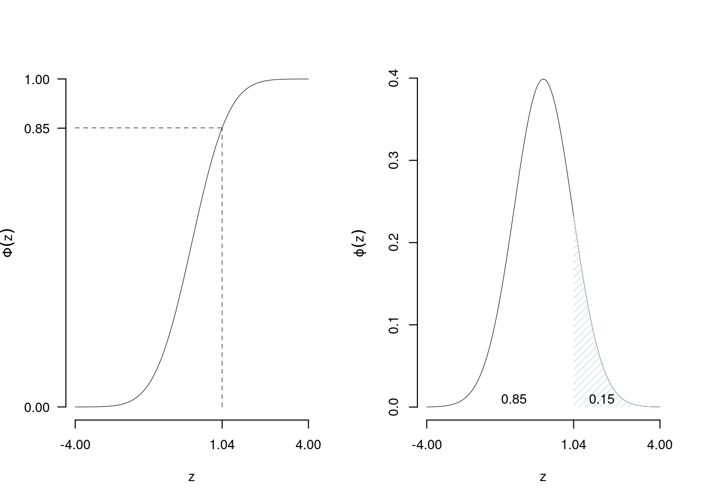
7.4.7.6 Alcuni valori speciali di \(\alpha\)
Alcuni valori di \(\alpha\) sono di particolare interesse per le future applicazioni questi valori sono \[0.5, 0.25, 0.1, 0.05, 0.025, 0.01, 0.005, 0.001, 0.0005\]
Per tali valori le tavole della normale vengono arricchite con una tabella supplementare
\[\begin{array}{lrrrrrrrr} \hline \alpha & 0.5 & 0.1 & 0.05 & 0.025 & 0.01 & 0.005 & 0.001 & 0.0005 \\ z_\alpha & 0.0000 & 1.2816 & 1.6449 & 1.9600 & 2.3263 & 2.5758 & 3.0902 & 3.2905 \\ \Phi(z_\alpha)=1-\alpha & 0.5 & 0.9 & 0.95 & 0.975 & 0.99 & 0.995 & 0.999 & 0.9995 \\ \hline \end{array}\]
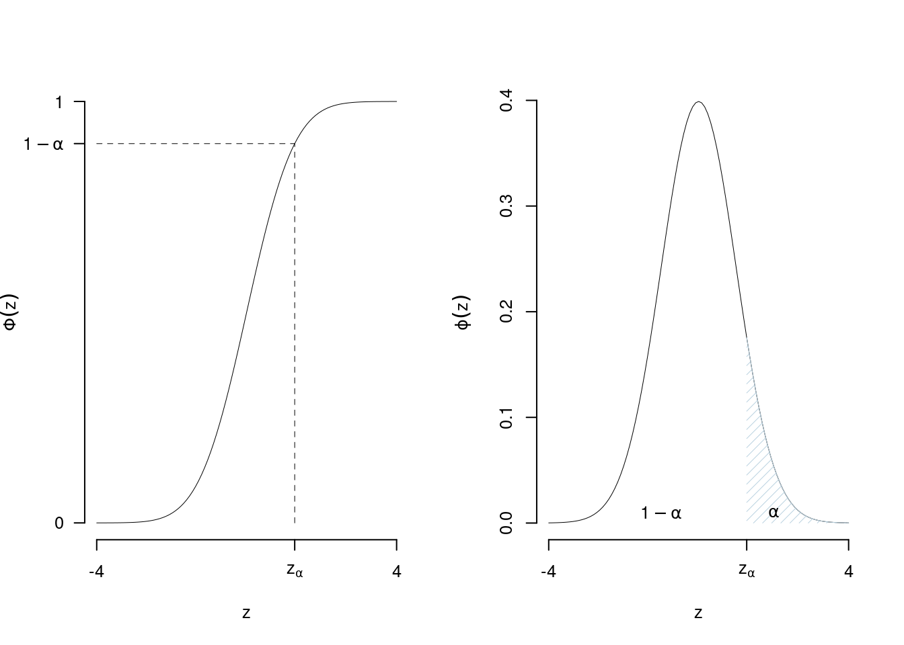
Esempio 7.11 Se \(\alpha=0.1\) allora \(z_{0.1}=1.2816\) \[P(Z>1.2816)=0.1,\qquad P(Z\leq 1.2816)=0.9\] Se \(\alpha=0.025\) allora \(z_{0.025}=1.96\) \[P(Z>1.96)=0.025,\qquad P(Z\leq 1.96)=0.975\]
7.4.8 In Sintesi
Se \(X\) è distribuita come una Normale di parametri \(\mu\) e \(\sigma^2\), allora
\[\begin{align*} \text{Notazione} & & X&\sim N(\mu,\sigma^2) \\ \text{Supporto} & & S_X &=(\infty,+\infty)\equiv\mathbb{R} \\ \text{Funzione di probabilità} & & f(x)&=\frac{1}{\sqrt{2\pi\sigma^2}}e^{-\frac 12 \left(\frac{x-\mu}{\sigma}\right)^2}\\ \text{Spazio dei paramteri} & & \mu&\in(-\infty,+\infty)\equiv\mathbb{R}\\ & & \sigma^2&\in(0,+\infty)\equiv\mathbb{R}^+\\ & & (\mu,\sigma^2)&\in\mathbb{R}\times\mathbb{R}^+\\ \text{Valore Atteso} & & E(X)&=\mu\\ \text{Varianza} & & V(X)&=\sigma^2\\ \end{align*}\]
Proprietà:
- Sia \(X\sim N(\mu,\sigma^2)\), posto \[Y=a+bX,\qquad\text{$a$ e $b$ due numeri reali qualunque}\] allora \[Y\sim N(a+b\mu,b^2\sigma^2)\]
- Siano \(X_1, X_2,...,X_n\), \(n\) VC indipendenti, tali che \[X_i\sim N(\mu_i,\sigma_i^2)\] posto \[Y=a_1X_1+...+a_nX_n\] dove \(a_1,...,a_n\) sono \(n\) numeri reali qualunque, allora \[Y\sim N(a_1\mu_1+...+a_n\mu_n,a_1^2\sigma_1^2+...+a_n^2\sigma_n^2)\]
7.4.9 Esempio
Siano \(X\sim N(1.5,0.25)\) e sia \(Y\sim N(0.5,0.09)\), \(X\) e \(Y\) indipendenti. Si considerino i seguenti insiemi: \(A=\{X>0.9\}\), \(B=\{0.5<X<1.8\}\), \(C=\{0.4<Y< 1.2 \}\)
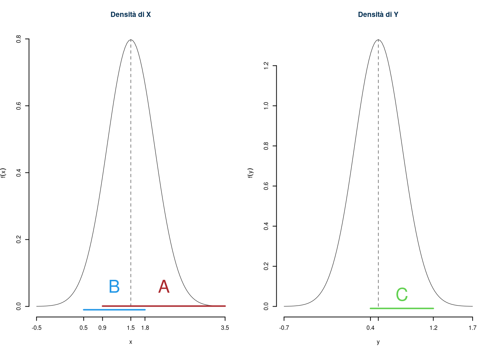
- Calcolare \(P(B)\).
\[\begin{eqnarray*} P( 0.5 < X \leq 1.8 ) &=& P\left( \frac { 0.5 - 1.5 }{\sqrt{ 0.25 }} < \frac { X - \mu_X }{ \sigma_X } \leq \frac { 1.8 - 1.5 }{\sqrt{ 0.25 }}\right) \\ &=& P\left( -2 < Z \leq 0.6 \right) \\ &=& \Phi( 0.6 )-\Phi( -2 )\\ &=& \Phi( 0.6 )-(1-\Phi( 2 )) \\ &=& 0.7257 -(1- 0.9772 ) \\ &=& 0.7029 \end{eqnarray*}\]
- Calcolare di \(P(A)\).
\[\begin{eqnarray*} P( X > 0.9 ) &=& P\left( \frac { X - \mu_X }{ \sigma_X } > \frac { 0.9 - 1.5 }{\sqrt{ 0.25 }} \right) \\ &=& P\left( Z > -1.2 \right) \\ &=& 1-P(Z< -1.2 )\\ &=& 1-(1-\Phi( 1.2 )) \\ &=& 0.8849 \end{eqnarray*}\]
alternativamente possiamo osservare che \[A=\{X>0.9\}=\{0.9< X\leq +\infty \}\]
\[\begin{eqnarray*} P( 0.9 < X \leq +\infty ) &=& P\left( \frac { 0.9 - 1.5 }{\sqrt{ 0.25 }} < \frac { X - \mu_X }{ \sigma_X } \leq \frac { +\infty - 1.5 }{\sqrt{ 0.25 }}\right) \\ &=& P\left( -1.2 < Z \leq +\infty \right) \\ &=& \Phi( +\infty )-\Phi( -1.2 )\\ &=& \Phi( +\infty )-(1-\Phi( 1.2 )) \\ &=& 1 -(1- 0.8849 ) \\ &=& 0.8849 \end{eqnarray*}\]
- Calcolare \(P(C)\).
\[\begin{eqnarray*} P( 0.4 < Y \leq 1.2 ) &=& P\left( \frac { 0.4 - 0.5 }{\sqrt{ 0.09 }} < \frac { Y - \mu_Y }{ \sigma_Y } \leq \frac { 1.2 - 0.5 }{\sqrt{ 0.09 }}\right) \\ &=& P\left( -0.33 < Z \leq 2.33 \right) \\ &=& \Phi( 2.33 )-\Phi( -0.33 )\\ &=& \Phi( 2.33 )-(1-\Phi( 0.33 )) \\ &=& 0.9901 -(1- 0.6293 ) \\ &=& 0.6194 \end{eqnarray*}\]
- Individuare l’insieme \(A\cap B\).
Osserviamo che \[A\cap B=\{X>0.9\}\cap\{0.5<X<1.8\}= \{0.9<X<1.8\} \] e quindi \(A\cap B\) è un intervallo sulla retta di supporto di \(X\)
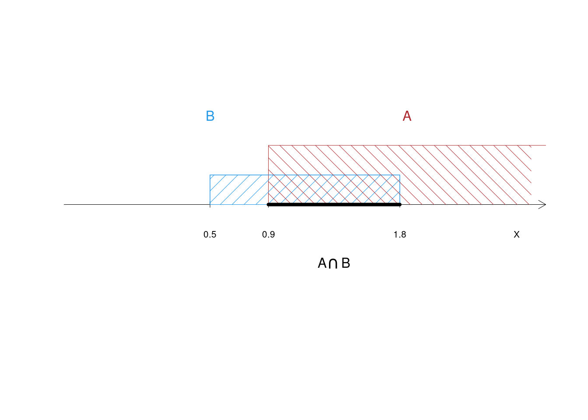
- Calcolare \(P(A\cap B)\).
\[\begin{eqnarray*} P( 0.9 < X \leq 1.8 ) &=& P\left( \frac { 0.9 - 1.5 }{\sqrt{ 0.25 }} < \frac { X - \mu_X }{ \sigma_X } \leq \frac { 1.8 - 1.5 }{\sqrt{ 0.25 }}\right) \\ &=& P\left( -1.2 < Z \leq 0.6 \right) \\ &=& \Phi( 0.6 )-\Phi( -1.2 )\\ &=& \Phi( 0.6 )-(1-\Phi( 1.2 )) \\ &=& 0.7257 -(1- 0.8849 ) \\ &=& 0.6106 \end{eqnarray*}\]
Osservare che \(0.6107=P(A\cap B)\neq P(A)P(B)=0.6221\), il motivo è che \(A\) e \(B\) non sono eventi indipendenti, perché sono due insiemi della stessa variabile \(X\).
- Individuare l’insieme \(B\cap C\).
Quando invece osserviamo \(B\cap C\) vediamo che \[B\cap C=\{0.5<X<1.8\}\cap\{0.4<Y< 1.2\}= \{0.5<X<1.8\}\times\{0.4<Y< 1.2\} \] e dunque \(B\cap C\) è un rettangolo sul piano \((X,Y)\)
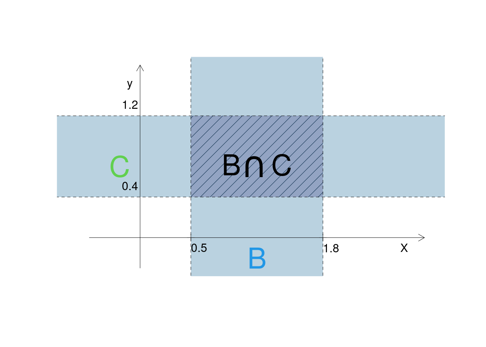
- Calcolare \(P(B\cap C)\).
Anzitutto osserviamo che la coppia di VC \((X,Y)\) vive sul piano e la densità di probabilità è una superficie \[f(x,y)=f(x)f(y)\] dove \(f(x,y)\) e la densità della normale doppia in \((x,y)\) \(f(x)\) è la densità di \(X\) e \(f(y)\) è la densità di \(Y\).
Dal punto di vista grafico:
Calcolare \(P(B\cap C)\) equivale a calcolare il volume sotteso della densità doppia al rettangolo \(B\cap C\):
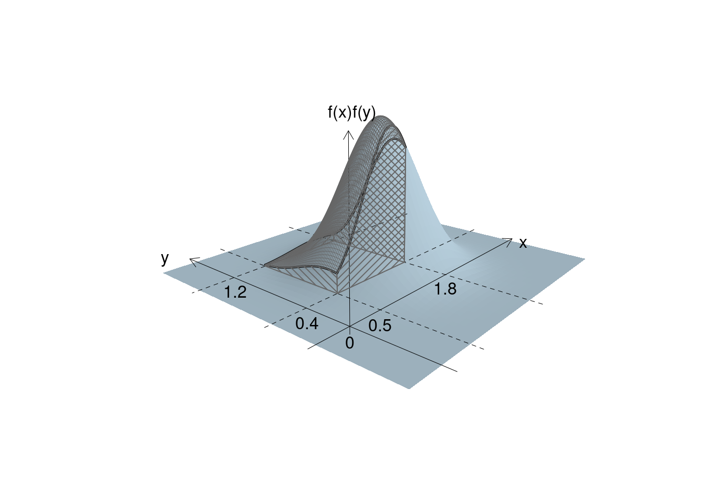
Operativamente basta moltiplicare le due probabilità: \[P(\{x_1<X<x_2\}\cap\{y_1<Y<y_2\})=P(\{x_1<X<x_2\})P(\{y_1<Y<y_2\}),\qquad \text{in virtù dell'indipendenza}\] E dunque: \[P(B\cap C)=P(B)P(C)=0.703\times0.6207=0.4364\]
- Calcolare di \(P(A\cup B)\).
Iniziamo osservando che \[A\cup B=\{X>0.9\}\cup\{0.5<X<1.8\}=\{X > 0.5\}\] e dunque
\[\begin{eqnarray*} P( X > 0.5 ) &=& P\left( \frac { X - \mu_X }{ \sigma_X } > \frac { 0.5 - 1.5 }{\sqrt{ 0.25 }} \right) \\ &=& P\left( Z > -2 \right) \\ &=& 1-P(Z< -2 )\\ &=& 1-(1-\Phi( 2 )) \\ &=& 0.9772 \end{eqnarray*}\]
- Calcolare \(P(B\cup C)\).
Iniziamo osservando che \[B\cup C=\{0.5<X<1.8\}\cup\{0.4<Y<1.2\}\] e dunque, dalla regola della somma otteniamo: \[P(B\cup C)=P(B)+P(C)-P(B\cap C)=0.703+0.6207-0.4364=0.8874\]
- Calcolare \(P(A|B)\).
Dalla definizione di probabilità condizionata otteniamo: \[P(A|B)=\frac{P(A\cap B)}{P(B)}\] e dunque: \[P(A|B)=\frac{0.6107}{0.703}=0.8687\]
- Calcolare \(P(B|C)\).
\[P(B|C)=\frac{P(B\cap C)}{P(C)}=\frac{P(B)P(C)}{P(C)}=P(B)=0.703\] Osservazione: \(X\) e \(Y\) sono indipendenti e quindi \(B\) e \(C\) sono a loro volta eventi indipendenti: la probabilità che \(B\) sia vero non cambia se \(C\) è vero o se \(C\) è falso.
- Sia \(W=X+Y\), calcolare la probabilità che \(W<1\).
Dalle proprietà della normale otteniamo che \(W\sim N(1.5+0.5,0.25+0.09)\) e dunque
\[\begin{eqnarray*} P( W < 1 ) &=& P\left( \frac { W - \mu_W }{ \sigma_W } < \frac { 1 - 2 }{\sqrt{ 0.34 }} \right) \\ &=& P\left( Z < -1.71 \right) \\ &=& 1-\Phi( 1.71 ) \\ &=& 0.0436 \end{eqnarray*}\]
- Sia \(V=X-Y\), calcolare la probabilità che \(V<1.2\).
Dalle proprietà della normale otteniamo che \(V\sim N(1.5-0.5,0.25+0.09)\) e dunque
\[\begin{eqnarray*} P( V < 1.2 ) &=& P\left( \frac { V - \mu_V }{ \sigma_V } < \frac { 1.2 - 1 }{\sqrt{ 0.34 }} \right) \\ &=& P\left( Z < 0.34 \right) \\ &=& \Phi( 0.34 ) \\ &=& 0.6331 \end{eqnarray*}\]
- Sia \(V=X-Y\), posto \(A=\{V>0\}\) e \(B=\{V<1.2\}\). Calcolare \(P(A|B)\)
L’evento \(A\) è vero se \(V>0\) e l’evento \(B\) è vero se \(V<1.2\). Chiedersi quanto vale \(P(A|B)\) equivale a chiedersi “è stato estratto un numero casuale \(V\), non so quanto vale ma so che è minore di \(1.2\), con quale probabilità è maggiore di zero?”
Dalla definizione di probabilità condizionata \[\begin{eqnarray*} P(A|B)&=&\frac{P(A\cap B)}{P(B)}\\ &=&\frac{P(\{V>0\}\cap \{V<1.2\})}{P(V<1.2)}\\ &=&\frac{P(0<V<1.2)}{P(V<1.2)} \end{eqnarray*}\]
\[\begin{eqnarray*} P( 0 < V \leq 1.2 ) &=& P\left( \frac { 0 - 1 }{\sqrt{ 0.34 }} < \frac { V - \mu_V }{ \sigma^2_V } \leq \frac { 1.2 - 1 }{\sqrt{ 0.34 }}\right) \\ &=& P\left( -1.71 < Z \leq 0.34 \right) \\ &=& \Phi( 0.34 )-\Phi( -1.71 )\\ &=& \Phi( 0.34 )-(1-\Phi( 1.71 )) \\ &=& 0.6331 -(1- 0.9564 ) \\ &=& 0.5895 \end{eqnarray*}\]
E quindi
\[\begin{eqnarray*} P(A|B)&=&\frac{P(A\cap B)}{P(B)}\\ &=&\frac{P(0<V<1.2)}{P(V<1.2)}\\ &=&\frac{0.5894}{0.6331}\\ &=&0.9311 \end{eqnarray*}\]
- Sia \(V=X-Y\), posto \(A=\{V>0\}\) e \(B=\{V<1.2\}\). Calcolare \(P(B|A)\)
\[\begin{eqnarray*} P(A|B)&=&\frac{P(A\cap B)}{P(A)}\\ &=&\frac{P(\{V>0\}\cap \{V<1.2\})}{P(V>0)}\\ &=&\frac{P(0<V<1.2)}{P(V>0)} \end{eqnarray*}\]
dobbiamo solo calcolare \(P(V>0)\)
\[\begin{eqnarray*} P( V > 0 ) &=& P\left( \frac { V - \mu_V }{ \sigma^2 } > \frac { 0 - 1 }{\sqrt{ 0.34 }} \right) \\ &=& P\left( Z > -1.71 \right) \\ &=& 1-P(Z< -1.71 )\\ &=& 1-(1-\Phi( 1.71 )) \\ &=& 0.9564 \end{eqnarray*}\]
E quindi
\[\begin{eqnarray*} P(B|A)&=&\frac{P(A\cap B)}{P(A)}\\ &=&\frac{0.5894}{0.9564}\\ &=&0.6163 \end{eqnarray*}\]